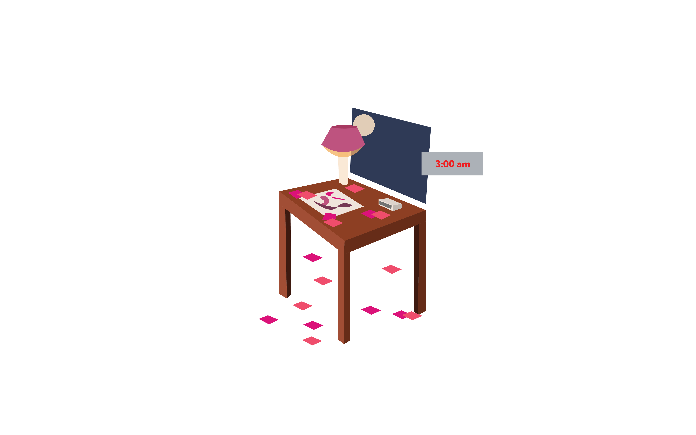

Late Night Horror Story
It was a [adjective] night in the design studio, and the dealine was fast approaching. I started at my [object] while it was [ verb -ing] [adverb] on my screen. Fueled by cafferie and stress, I felt [emotion] but kept working anyways.
By the time critique arrived, the project looked [adjective].
